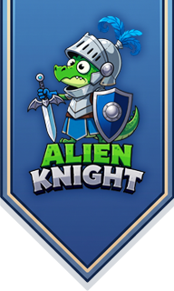
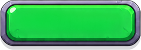
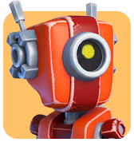
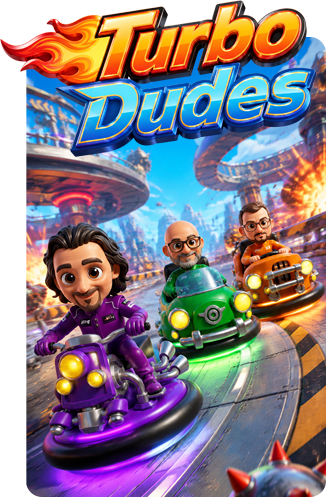
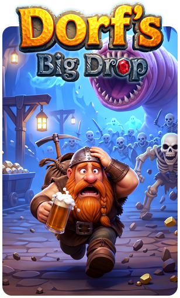

Juicy World is a bright and cheerful adventure game.
You need to rescue shipwrecked rabbits from crowds
of crazy mutant vegetables.
Juicy World is still in development, and we are preparing
for the October Steam festival.
Wishlist the game now to catch all the juicy updates!

Steam
Alien Knight was founded
by Luke Sheen (a carbon lifeform) — an artist who
has been creating video games for almost 20 years,
and Robert (a silicon lifeform) — an insufferable
know-it-all who is always in a good mood.
We are just starting our journey
and are open to all forms of collaboration.


Turbo Dudes is a non-commercial mobile game
made as a gift for our dear friend Antonio
to celebrate his big birthday.
You can play it right here by clicking
any button that says "Play".

Dorf's Big Drop is a story about an unlucky dwarf
who went looking for treasure and accidentally
got caught in a quantum entanglement.
The project is based on a very old concept
that never made it to development back in the day.
This time, the dwarf has every chance to shoot
ghosts and skeletons in endless dungeons —
just as soon as the rabbit saves all his friends
from the mutant vegetables.